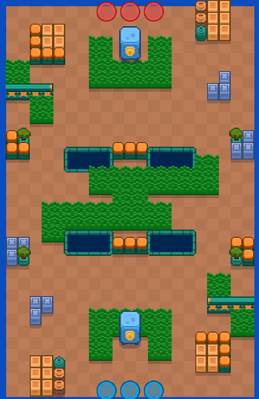
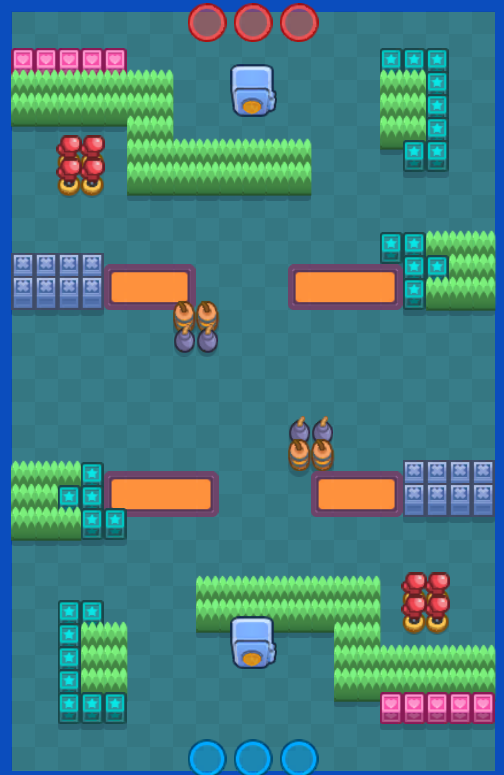
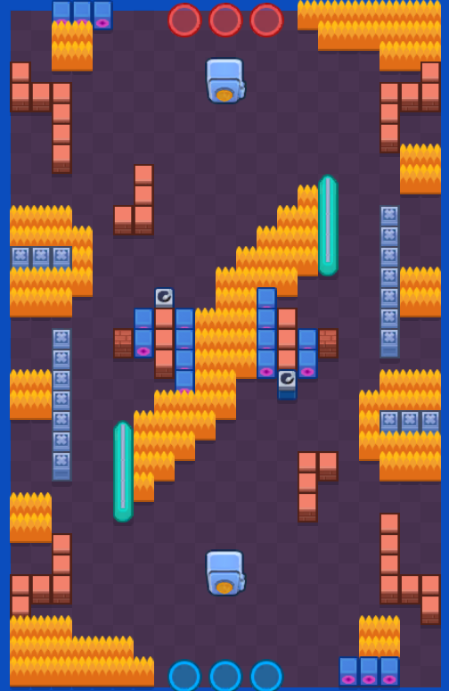
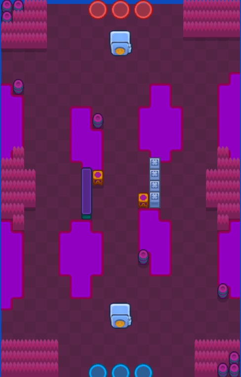

マップ別攻略
強奪
各マップに合った戦術とおすすめキャラを紹介！
トップ
キャラ攻略
マップ別戦術
モード攻略
アップデート
どんぱち谷

🗺特徴：
中央に大きなブッシュがあり、ブロックが少ない
⭐おすすめキャラ：
ミープル
メロディー
エリザベス
アンジェロ
チェック
ブロック
🎯戦術のポイント：
金庫削りの早いキャラが優秀
中央のブッシュでの戦闘がメインとなるため、近接攻撃の強力なキャラもしくは遠距離から少しずつ削るのもあり
安全地帯

🗺特徴：
斜めに射線が通りやすくなっているのが特徴。
⭐おすすめキャラ：
ルミ
メロディー
アンジェロ
ジュジュ
ベル
チャック
🎯戦術のポイント：
相手サイドにあるブロックを利用する
最初は真ん中で戦闘があるため遠距離で攻撃する
ホットポテト

🗺特徴
金庫付近が非常に開放的で、近づくのが難しいマップ
⭐ おすすめキャラ
ルミ
メロディー
チャック
ジュジュ
カール
リコ
🎯 戦術のポイント
両サイドのキャラで金庫に少しずつダメージを与える
真ん中から行くときは、体力の多いキャラを盾にする
橋の彼方

🗺特徴
細かい障害物が多く、射線が通りづらい
⭐ おすすめキャラ
コルト
チャック
コレット
エリザベス
アンジェロ
🎯 戦術のポイント
長射程キャラがおすすめ
水上を動けたりや塀を飛び越えれるキャラがおすすめ